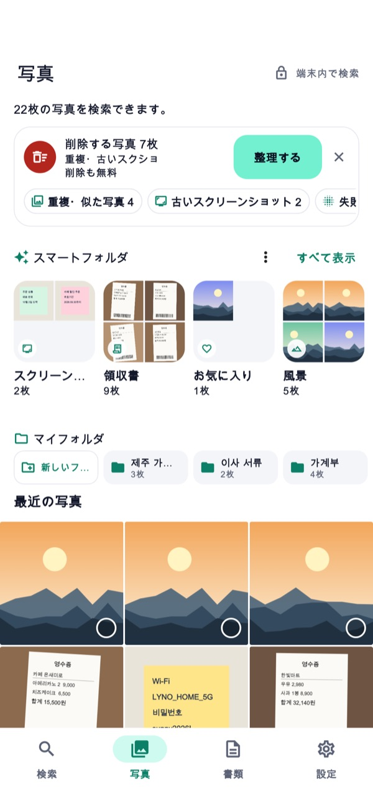
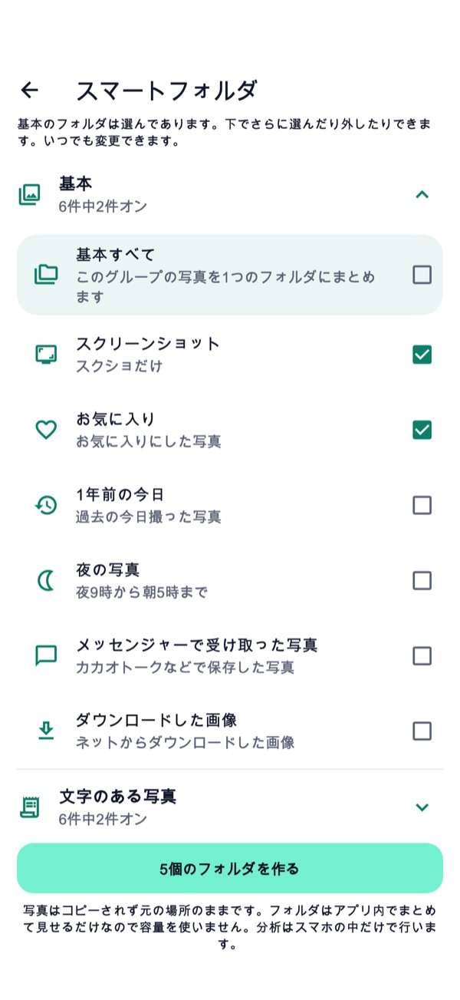

スマートフォルダの使い方
1. スマートフォルダとは?
LYNO Findが写真を自動で分類してフォルダにまとめる機能です。新しく撮った写真も合うフォルダに自動で入ります。

2. どんなフォルダがありますか?
最初からオン:スクリーンショット, 自撮り, お気に入り, 場所別, 旅行, 領収書, メモ・手書き, 料理, ペット
選んでオン:基本、場所・旅行、文字のある写真、人・動物、イベント、趣味・スポーツ、もの・食べ物、風景・自然の8グループに38個のフォルダがあります
3. 使い方
1. 下の写真タブを押します。
2. スマートフォルダの「すべて表示」を押すとフォルダを開けます。
3. 「フォルダを選ぶ」でグループを開き、好きなフォルダをオン・オフできます。
4. グループの一番上の「趣味・スポーツすべて」のような行をオンにすると、グループ全体を1つのフォルダにまとめます。

4. ご安心ください
写真をコピーしたり移動したりしません。元の写真はそのままで、フォルダは写真を集めて見せるだけです。分類はすべてスマホの中で行います。